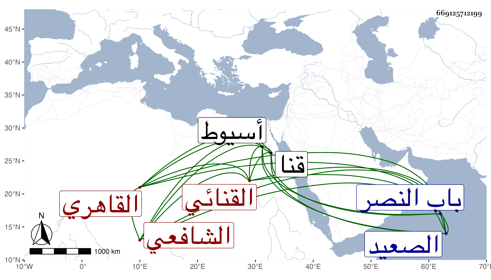

0902Sakhawi.DawLamic.ITO20230111-ara1.EIS1600.669125712199
Biography ID: 669125712199
أحمد بن عباد بن شعيب الشهاب أبو العباس القنائي ثم القاهري الشافعي نزيل القطبية المجاورة للصاحبية ويعرف بالخواص لكونه كان يتكسب أول ما قدم الجامع الأزهر بعمل المراوح بعد رعي الغنم في بلاده . ولد بقنا من أعمال أسيوط بالصعيد وقدم منها في سنة ست وثمانمائة وهو كما أخبر رجل كامل فدخل الأزهر وحفظ القرآن والبهجة وألفية ابن مالك وعروض الشاري وبانت سعاد وغيرها واشتغل بالفنون فأخذ الفرائض والحساب عن ابن المجدي وناصر الدين البارنباري وعنه أخذ العروض وكذا أخذ عنه وعن الشرف السبكي والشمس البوصيري الفقه وحضره عند الشمس البرماوي والبرهان البيجوري والولي العراقي والنحو عن الشمس بن الجندي والحناوي وقرأ عليه الصحيح في آخرين في هذه العلوم وغيرها حتى بلغني أنه كان يقرأ على الشمس بن سارة في العضد أو غيره ولم يزل يدأب حتى أشير إليه بالفضيلة والبراعة في الفقه وأصوله وفي الفرائض والحساب والعربية والعروض والمعاني وغيرها مع الحرص على تكرير محافيظه ، وتصدى للإقراء مدة طويلة فانتفع به الناس وتخرج به جماعة وعمل في العروض مقدمة رأيتها وسماها الكافي في العروض والقوافي وقد شرحها من طلبته الشهاب بن الصيرفي ونظمها هو والشهاب القليجي ، وممن أخذ عنه الزين المنهلي وابن سولة وابن الصيرفي ومن لا أحصيه كثرة وكان حسن التعليم لين الجانب حاد الخلق مديما للأشغال طول نهاره بدون ضجر ولا ملل مع التقشف ونحافة البدن وكثرة التوعك ومزيد اعتقاد الناس فيه بل لم يره أحد إلا اعتقده والتقلل من الدنيا فلم يكن باسمه سوى وظيفة التصوف بالفخرية ثم الإمامة بالقطبية ومشيختها وكانت محل إقامته ولذلك كان المناوي يرسل إليه ولده زين العابدين ليصحح عليه لوجه في البهجة ، رأيته ونعم الرجل كان ولكنه لم يكن بالذكي . مات بالقطبية بعد تمرضه مدة في شعبان سنة ثمان وخمسين وقد قارب الثمانين ودفن خارج باب النصر في حوش الصوفية رحمه الله وإيانا ونفعنا به .
